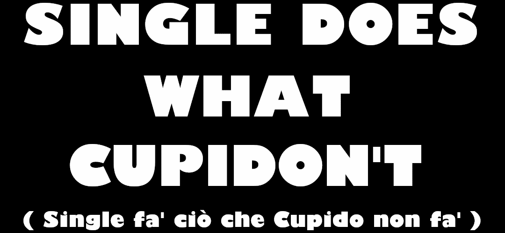
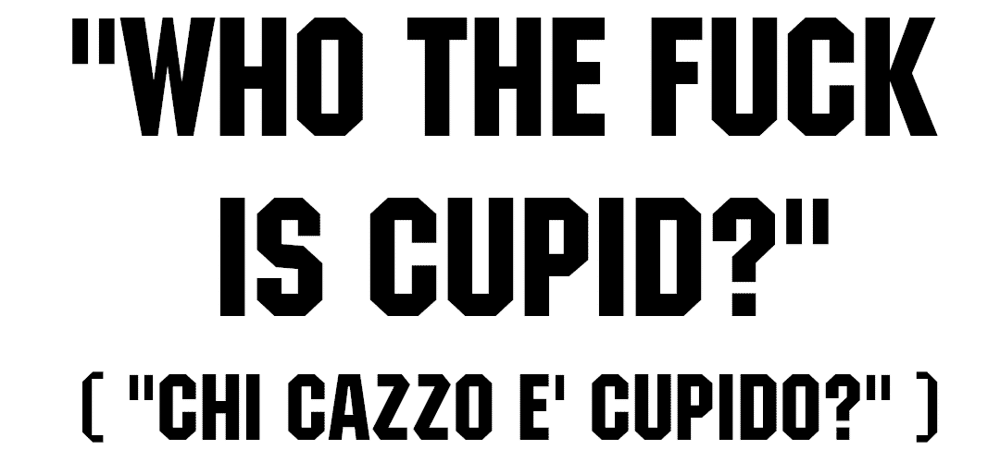

Summary of my interest in real human women (including men)
❤️ And to conclude... + 🗣️ Comment Section
Idea, write, edit and meme recreation + recontextualization by the dear •SGN98•: from and to 8·Oct·2026. It's based on SEGA' USA Comparative Ads against Nintendo during the early 1990sTelegram: Ita. · Eng.
Mastodon: Ita. · Eng.
Bluesky · Ludomedia